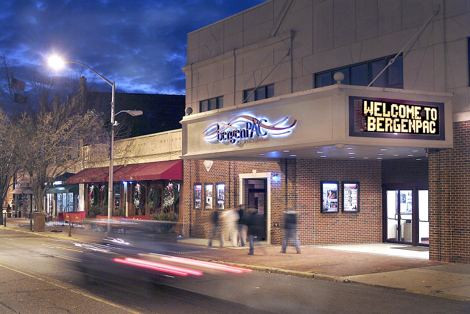

23 Bliss Ave.,
Tenafly, NJ 07670
Visit Site
201.894.8611
The African Art Museum of the SMA Fathers at Tenafly, New Jersey is one of five museums around the world founded and maintained by the Society of African Missions (SMA), an international Roman Catholic missionary organization that serves the people of Africa.
400 Fred Wehran Rd.
Teterboro, NJ 07608
Visit Site
201.288.6344
The museum offers visitors an opportunity to view historic aircraft, air and space artifacts, photographs, fine art and an extensive model collection. The Library has more than 2500 volumes and hundreds of aviation videotapes.
Division Ave. & Sixth St.
Carlstadt, NJ 07072
Visit Site
201.933.1070
The museum, run by the Carlstadt Historical Society, houses a remarkable collection that includes archival photographs, written documents, news articles, clothing and other items that bring the borough’s colorful history to life. You can find everything from 1930s-era school pennants to early 20th century fife and drum corp. uniforms to a vintage breathalyzer used by the police department.
1588 Palisade Ave.
Fort Lee, NJ 07024
Visit Site
201.592.3663
The museum's archives contains material from the famed Riviera Nightclub, Fort Lee High School, the Fort Lee Athletic Club, the George Washington Bridge and the American Revolution among other institutions, landmarks and historic events. Located on Parker Avenue, between Monument Park and the Church of the Good Shepherd, the quaint stone building fits right into its surroundings in a particularly scenic area of downtown Fort Lee. The facility is located on the grounds of George Washington's original encampment.
330 Paramus Rd.
Paramus, NJ 07652
Visit Site
201.445.1804
The Fritz Behnke Historical Museum is named after Fritz Behnke, who was actually born in Paramus in 1919. As you walk through the first floor of the museum, check out the furnishings of the farmhouse, including the utensils used for cooking and cleaning, washing, ironing, and sewing, which were all part of a housewife’s daily chores. One of the first electric washing machines is on display, a duplicate of which is currently in the Smithsonian Institute in Washington DC. Other items on display include an old ice box (refrigerator), a wood-burning stove, and an early gas stove. Take notice of the many toys that the children played with, such as dollhouses, scooters, toy tractors and board games.
705 Kinderkamack Rd.
Oradell, NJ 07649
Visit Site
201.261.0012
The Hiram Blauvelt Art Museum was established in 1957 by the Blauvelt-Demarest Foundation, a legacy of the late Hiram Blauvelt, philanthropist, conservationist and collector. Through the contribution of his private wildlife art and big game collections, he hoped to promote the cultural value of wildlife art and the need for conservation of its subjects and their habitats.
245 Lake St.
Upper Saddle River, NJ 07458
Visit Site
201-327-2236
The Hopper-Goetschius house on the corner of Lake Street and East Saddle River Road dates back to 1739. Built by the Hopper family, it is the oldest remaining house in Upper Saddle River. We know it existed in 1739 because it was recorded in surveyor Charles Clinton's journal, and possibly it is older. Rosalie Fellows Bailey in her book on pre-Revolutionary Dutch houses, says it was marked as the home of Gerrit Hoppa on a rough sheepskin map made about 1713.
400 Riverside Ave.
Lyndhurst, NJ 07071
Visit Site
201.935.7479
On January 9, 1804, Jacob Van Winkle deeded a strip of land to school trustees for the construction of a school. Van Winkle requested a token yearly rent of just one peppercorn, if demanded, for the land. The peppercorn was a dried berry of black pepper, expensive in quantity because it was an Asian spice that had to be imported by ship. The first schoolhouse was erected that same year with money raised by subscription. The cost was $162.20. Thus was born the first known public school system in Bergen County.
201 Franklin Turnpike
Mahwah, NJ 07430
Visit Site
201.512.0099
The Mahwah Museum Society is to preserve and present the history of the community and its connection to the region. Museum exhibits display information about the history of Mahwah and the surrounding community. The Society also presents a monthly lecture series featuring programs related to local history given by distinguished amateur and professional historians.
280 High St.
Closter, NJ 07624
Visit Site
201.768.0286
Located in Closter, NJ the Belski Museum of Art and Science was founded by the Closter Lions Club to preserve, house and exhibit the works of Abram Belski, a sculptor, medical illustrator, and resident of Closter.
91 Crane Ave.
Rutherford, NJ 07070
Visit Site
201.935.1175
The Meadowlands Museum is housed in an early 19th century farmhouse. It is one of the few remaining homes of that time period left in our Meadowlands area.
USS Ling
78 River St.
Hackensack, NJ 07601
Visit Site
201.342.3268
The museum contains a large collection of unique items ranging from a SEAL delivery vehicle to an authentic Mark V Diving Suit plus many photos and other interesting memorabilia.
Ridgewood Historical Society
650 East Glen Ave.
Ridgewood, NJ 07451
Visit Site
201.447.3242
The one-room schoolhouse in which the museum is housed was built in 1872 and was an operational school until 1905. It now serves as a museum of historic artifacts and is maintained by the Ridgewood Historical Society. Formerly District School No. 45, the Museum features exhibits that emphasize the historic Saddle River Valley area in the 18th and 19th centuries, an area that was primarily Dutch when first settled.
335 North Franklin Turnpike
Ho-Ho-Kus, NJ 07423
Visit Site
201.445.8311
The Hermitage in Ho-Ho-Kus, New Jersey, is a National Historic Landmark that is also listed on the National and State Registers of Historic Places. Its picturesque Gothic Revival design dates from a remodeling completed in 1847–48 by the architect William H. Ranlett for Elijah Rosencrantz Jr. The rarity and completeness of its architecture is the basis for The Hermitage's National Historic Landmark designation. The Hermitage is much more than a historic house museum. It is a focal point for our community and an invaluable resource for everyone living and working in the local area.
599 Valley Health Plaza
Paramus, NJ
Visit Site
201.262.5151
Explore over 30 different play and learning areas, each designed to attract and engage the imagination! Your child is your guide. Every visit is different! On one visit your child will love Virtual Reality for Preschoolers and the next visit your child will love Funnel Fun, where you fill funnels with sand and swing them over a table to make sand patterns. It all starts with laughter at the front entrance as your children look into the Fun Mirrors.
Westwood Train Station
Broadway & Westwood Ave.
Westwood, NJ 07675
Visit Site
201.666.9682
The Westwood Museum, which is located in the Westwood Train Station building, was established in 2002 and held its 'Grand Opening' on Memorial Day 2002. The Museum serves as an exhibit gallery for the numerous artifacts of Westwood's past and records of its history that have been acquired or compiled by the Society.
1775 Windsor Rd
Teaneck, NJ 07662
201.833.4650
Visit Site
World of Wings was created to change the face of family entertainment and educate its visitors as well as entertain. A combination of the wonders of technology and the beauty of Mother Nature create a unique experience appealing to any age range.
County Historic Site
13 Pascack Road
Park Ridge, NJ 07656
Visit Site
201.336.7267
The Wortendyke Barn Museum, a National Register landmark, is all that remains of the original Wortendyke family farm. The museum’s exhibits include handmade 18th and 19th century farm implements and tools, the history of the Wortendyke family farm, and exhibits showing the agricultural history of Bergen County from the first settlers through the 20th century. This accessible museum is open Sunday afternoons May – October. Group reservations are available by appointment.